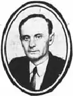

Веніамін ГУТЯНСЬКИЙ
Гутянський Веніамін Іонович народився 1903 року в м. Глибичок на Вінниччині в бідній сім'ї столяра. Початкову освіту здобув у Бершадській середній школі. Ще в дитячі роки почав трудову діяльність — спочатку учнем слюсаря та підсобним робітником, а пізніше — приватним учителем.
На початку 1923 року переїхав до Києва й вступив до педагогічного технікуму. Після завершення навчання викладав мову й літературу в трудових школах Києва. Починаючи з 1930 року, пише єврейською мовою вірші для дітей, пробує себе в жанрі байки. Популярність Гутянському принесли збірки поезій "Для малят" (1936), "Різне" (1937), "Байки" (1940), "Сіль у вічі" (1944). 1940 року його прийняли до Спілки письменників. Під час Великої Вітчизняної війни Гутянський разом із родиною евакуювався до Уфи, працював коректором у видавництві. У воєнні роки він створив ряд гострих сатиричних віршів, спрямованих проти фашизму, перекладав рідною мовою байки Крилова. Після Перемоги поет тяжко хворим повернувся до Києва. 5 липня 1949 року Гутянський був заарештований. Як і інших єврейських літераторів, його звинуватили в "націоналістичній пропаганді", "в зв'язках з американським журналістом, розвідником Магідовим". Підставою для цього став той факт, що в дружини Гутянського — літературознавця Берти Корсунської — десь в Америці жив далекий родич журналіст Магідов, котрий свого часу був акредитований у Москві. У голодні роки війни Магідов іноді подавав матеріальну допомогу сім'ї Гутянського. (Корсунську, до речі, теж арештували). Родичі зрідка зустрічалися в Києві. обмінювалися листами... Цього було достатньо, щоб звинуватити літераторів у найтяжчих гріхах. Через кілька днів після арешту В. Гутянського з'явилася постанова особливої наради — 10 років таборів суворого режиму. У матеріалах судово-слідчої справи зберігається документ, в якому зазначено: під час обшуку квартири опис майна не проводився через його відсутність. Наприкінці 1955 року В. Гутянський був достроково звільнений із ув'язнення за станом здоров'я. Смертельно хворий на сухоти поет ледь дістався до Кустаная, де в засланні жили його обездолені діти. 18 серпня 1956 року письменник помер. Свого часу Оксана Іваненко, Володимир Сосюра та Марія Пригара звернулися в судові органи з проханням реабілітувати чесне ім'я поета. Цієї події Веніамін Гутянський, на жаль, так і не дочекався. Реабілітували його посмертно. Григорій Полянкер ЛУ 29 (4438) 19.07.1991